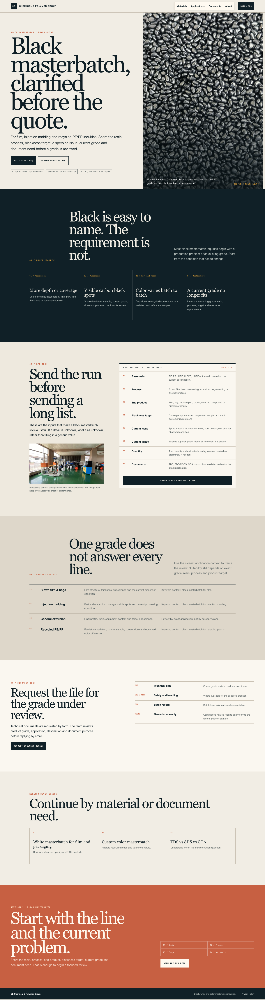
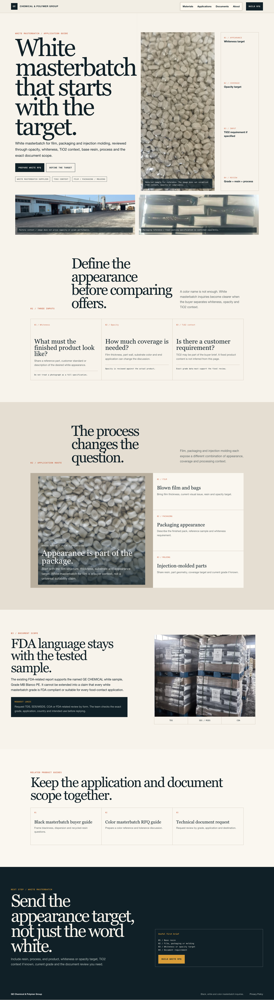
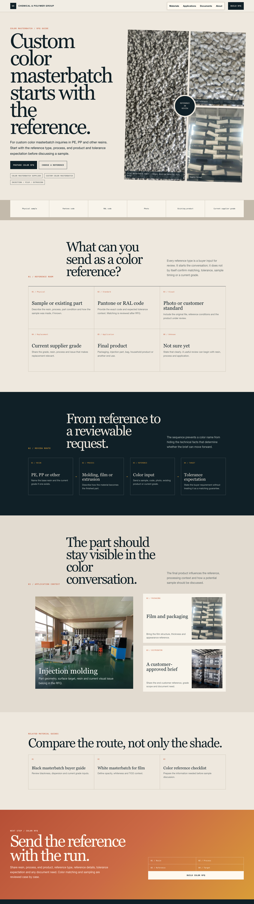

A. Black Buyer Desk
black masterbatch / black masterbatch supplier / carbon black masterbatch / for film / for injection molding / for recycled plastic最强采购意图。首屏直接解决黑度、分散、回收料波动和换牌号问题，RFQ 表格成为页面主角。
打开 A
B. White Sample Book
white masterbatch / white masterbatch supplier / TiO2 masterbatch / for film / for packaging / for injection molding用白度、遮盖力和 TiO2 三个目标拆解询盘，并把 FDA 证据严格限定到具体测试样品。
打开 B
C. Color Reference Room
color masterbatch / custom color masterbatch / PE color masterbatch / PP color masterbatch / for injection molding用真实色样输入和配方路线组织页面，重点放在色样类型、树脂、工艺、容差预期和样品讨论。
打开 C